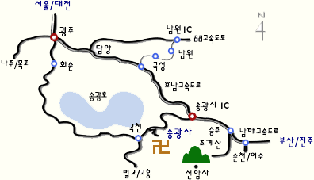

|
프로그래밍언어연구회 2003년도 여름 워크숍
LiComR
Summer 2003
[찾아오는
길]
광주종합(고속/시외)버스터미널에서
송광사행 시외버스가 있습니다. 광주에서 송광사까지의 버스요금은 5,200원
정도이고, 약 1시간 30분 정도가 소요됩니다. 송광사 버스정류장에 내리면
송광사 매표소까지 약3분 정도, 매표소를 지나 송광사 대웅전까지는
약15분정도 걸으면 됩니다. 기차로 오시는 분은 광주역에서 종합버스터미널로
이동하셔야 합니다. 택시로 약 5,000원 정도가 든다고 합니다.
■
광주(종합터미널)출발 송광사행 - 1시간 20~40분 소요
08:50,
09:55, 10:45, 12:37, 13:40, 14:30, 15:45, 17:45, 21:00
■
송광사출발 광주행(종합터미널) - 1시간 20~40분 소요
06:45,
08:45, 10:20, 12:20, 13:30, 14:35, 15:30, 16:40, 17:30, 18:30

준비위원
: 도경구, 배민오, 변석우, 신승철, 이광근, 정주희, 최진영 |